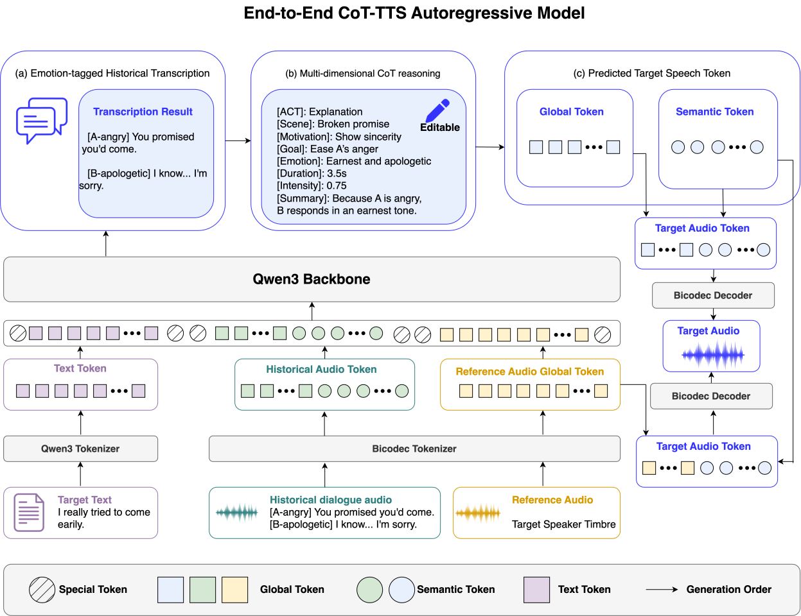
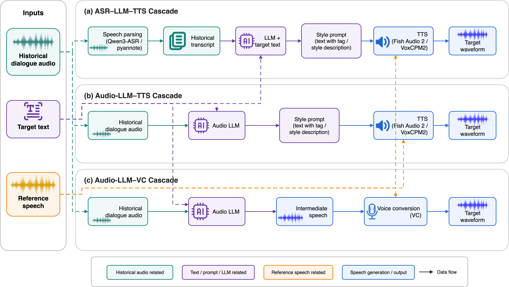

Model
End-to-end autoregressive COT-TTS
We develop 0.6B- and 1.7B-parameter end-to-end autoregressive models that sequentially generate emotion-tagged transcripts, speaking-manner reasoning, and speech tokens. The intermediate reasoning can be inspected and edited before speech synthesis.

Baseline
Task-specific cascaded reference systems
We construct task-specific baselines based on ASR--LLM--TTS, AudioLLM--TTS, and AudioLLM--VC pipelines for side-by-side comparison against the end-to-end models. These cascaded systems highlight how much explicit reasoning and controllable speech generation can be preserved when the task is solved through modular components instead of a unified model.
